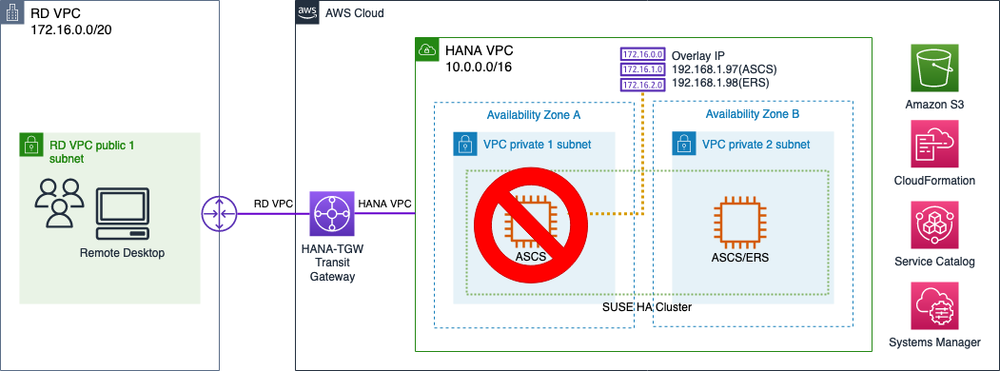
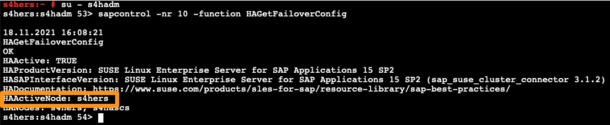
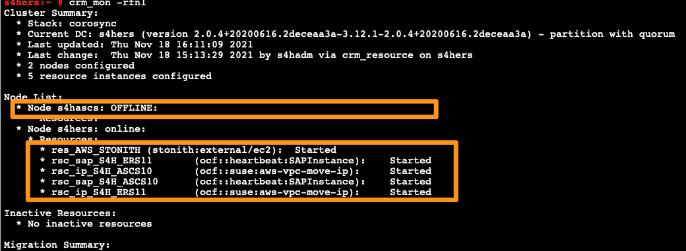
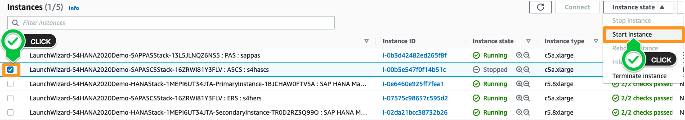
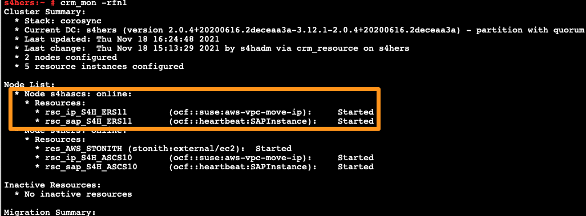
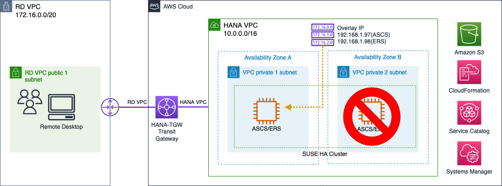
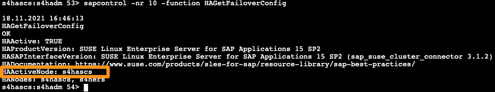
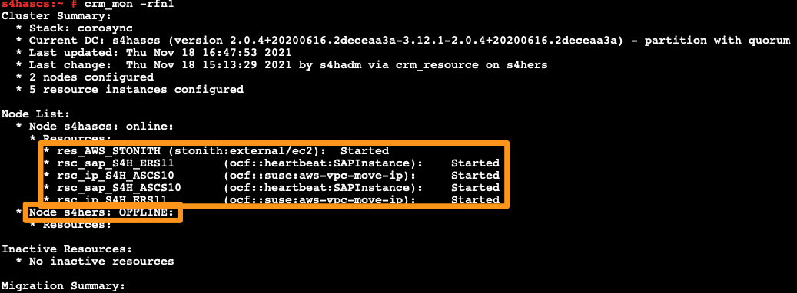
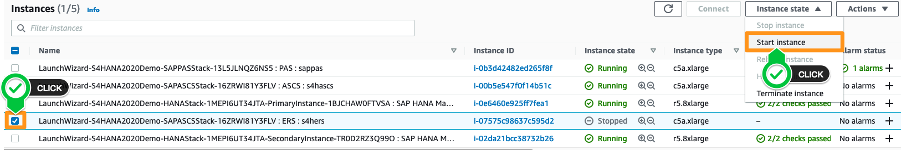
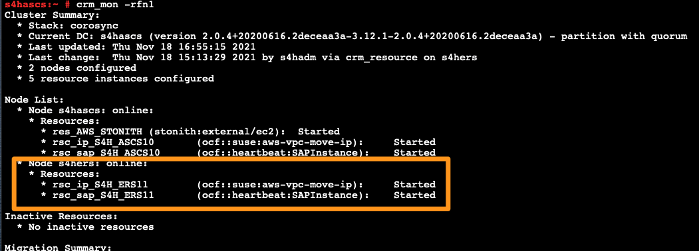

Let’s learn how the cluster reacts when the SAP Application server is crashed.
When a system crash occurs in s4hascs, check whether s4hers node is normally changed to ASCS Active node. 
You will only need to re-open your session if you have already disconnected from it. We recommend reusing the same session with this instance. Leave your session open and go back to it when needed, as we will need to access it several times, for both prihana and sechana.
Use Session Manager to connect to ~ ASCS : s4hascs (s4hascs).
To simulate a system crash, we will do a forced stop of the operating system, via a fast-shutdown on s4hascs (use root user). Your Session Manager session will become unresponsive after this, you can close that tab/window in your browser.
sudo su -
echo b >/proc/sysrq-trigger
Since s4hascs has now crashed, let’s check cluster on s4hers. Use Session Manager to connect to ~ ERS : s4hers instance.
Check cluster status. Use sapcontrol to check if s4hers is in Active status. If it does not show Active status yet, wait and try again.
su - s4hadm
sapcontrol -nr 10 -function HAGetFailoverConfig

check cluster status via crm_mon (as root user). Execute the command below to check if s4hers is in Active status. Unlike the previous case, s4hascs is in OFFLINE status.
sudo su -
crm_mon -rfn1

Due to the earlier “crash”, ~ ASCS : s4hascs (s4hascs). instance is in a stopped state. Now we will start s4hascs. Go back to the list of EC2 instances in the AWS Management Console, and select ~ ASCS : s4hascs (s4hascs). Click on Instance state, and then Start instance.

Once ~ ASCS : s4hascs (s4hascs) is running and all checks are passed, use Session Manager to connect to ~ ERS : s4hers (s4hers).
In s4hers, check the cluster status of s4hascs. Execute the command below to check if s4hascs is in Active status for ERS (use root user). after s4hascs is running, automatly migrate ERS to s4hascs
sudo su -
crm_mon -rfn1

When a system crash occurs in s4hers, check whether s4hascs node is normally changed to ASCS Active node. 
Use Session Manager to connect to the ~ ERS : s4hers instance.
Execute a fast-shutdown on the s4hers instance (using root user). Your Session Manager session will become unresponsive after this, you can close that tab/window in your browser.
sudo su -
echo b >/proc/sysrq-trigger
Since s4hascs has now crashed, let’s check cluster on s4hers. Use Session Manager to connect to ~ ERS : s4hers instance.
Check cluster status. Use sapcontrol to check if s4hers is in Active status. If it does not show Active status yet, wait and try again.
su - s4hadm
sapcontrol -nr 10 -function HAGetFailoverConfig

check cluster status via crm_mon (as root user). Execute the command below to check if s4hers is in Active status. Unlike the previous case, s4hascs is in OFFLINE status.
sudo su -
crm_mon -rfn1

Due to the “crash”, ~ ERS : s4hers (s4hers). instance is in a stopped state. Now we will start s4hers. Go back to the list of EC2 instances in the AWS Management Console, and select ~ ERS : s4hers (s4hers). Click on Instance state, and then Start instance.

Once ~ ERS : s4hers (s4hers) is running and all checks are passed, use Session Manager to connect to ~ ASCS : s4hascs (s4hascs).
In s4hascs, check the cluster status of s4hers. Execute the command below to check if s4hers is in Active status for ERS (use root user). after s4hers is running, automatly migrate ERS to s4hers
sudo su -
crm_mon -rfn1

© 2019 Amazon Web Services, Inc. 또는 자회사, All rights reserved.